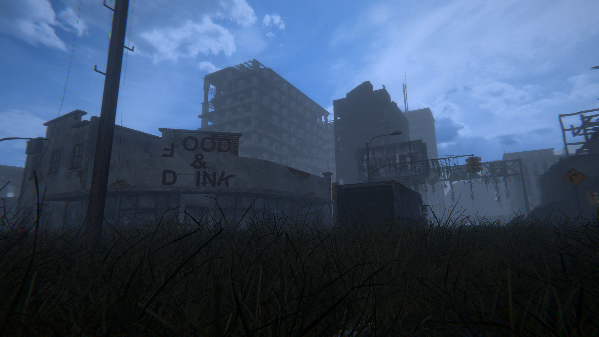
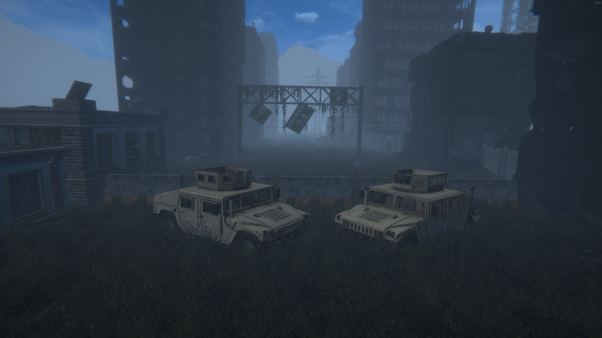
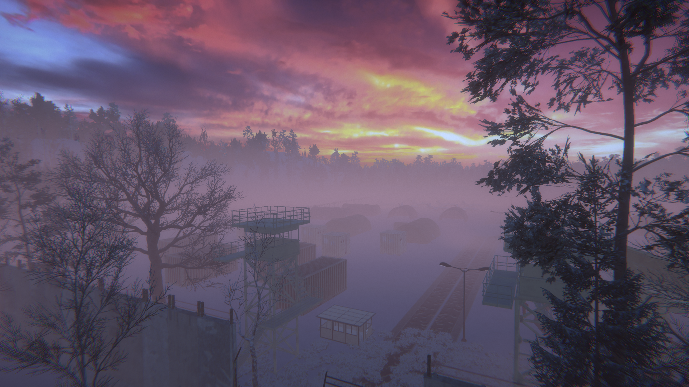
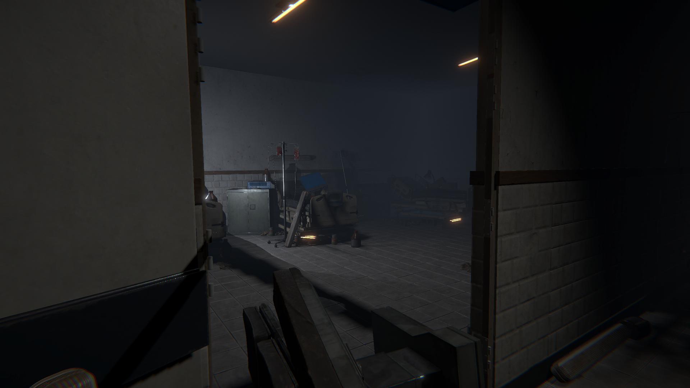

Studio Project
44 Days Company
Game Developer • 01/2023 – 11/2025 (Part-time)
Featured
Project: Nullwake
At 44 Days Company, I worked on game development with a strong focus on level design, gameplay structure, and moment-to-moment player experience. I designed maps with attention to pacing, navigation, atmosphere, and progression.
I also created design documentation, prepared tasks for programmers and artists, and helped connect the idea stage with the final in-engine result. My work included prototyping, improving mechanics, testing flow, and polishing the game until it felt more complete and consistent.
Map flow
Gameplay structure
Design docs
Implementation support



